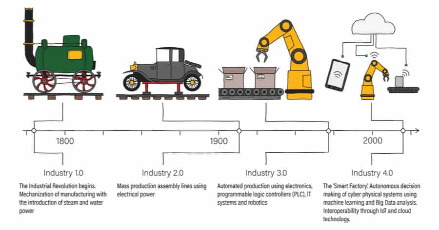
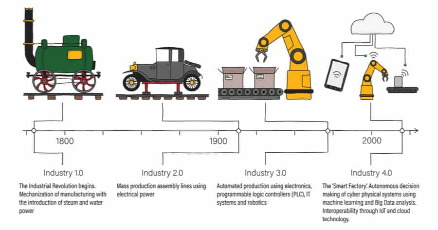

| SEJARAH SINGKAT
Revolusi Industri terjadi pada periode antara tahun 1760-1850 di mana terjadinya perubahan secara besar-besaran pada semua aspek kehidupan manusia dalam bidang pertanian, manufaktur, pertambangan, transportasi, dan teknologi, sehingga membuat dampak yang besar terhadap kondisi sosial, ekonomi dan budaya di dunia.


 
